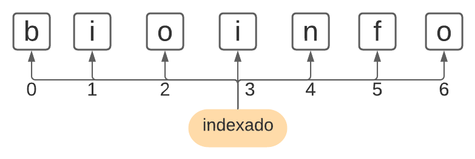
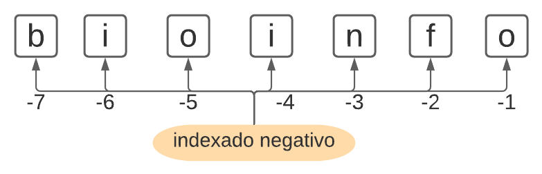

Resumen de la sintaxis básica
Contents
Resumen de la sintaxis básica¶
Autora: M. Nayeli Luis-Vargas
Variables¶
Reglas para asignar variables:
Siempre debe iniciar con letra (mayúscula o minúscula) o un guión bajo.
Puede contener números, solamente después de la primera letra.
No puede contener espacios en blanco
No puede utilizar palabras reservadas
Debe ser descriptiva y alusiva a lo que contenga.
En Python se recomienda que NO contenga puntos. Ejemplo:
mi.variable.
La asignación de variables en Python se lleva a cabo con el signo de igual (=).
Ejemplos de variables nombradas correctamente:
primer_numero = 123
segundoNumero = 543
TercerNumero = 432
Se puede asignar variables con datos de tipo “string” o cadena, es decir, con caracteres alfanuméricos, el requisito es que deben estar entre comillas (” “). Ejemplo:
primer_planeta = "Mercurio"
Operadores¶
Operadores aritméticos¶
Símbolo |
Significado |
|---|---|
+ |
suma |
- |
resta |
* |
multiplicación |
/ |
división |
// |
división entera |
% |
residuo o módulo |
** |
potencia |
# Suma
a = 234432
b = 543895
a + b
778327
# Resta
a -b
-309463
# multiplicación
a * b
127506392640
# División
a / b
0.4310243705126909
# División entera
a // b
0
# Módulo
a % b
234432
# Potencia
a ** 3
12883998866669568
Operadores relacionales¶
Recuerda que éste da como resultado un dato booleano o lógico.
Símbolo |
Significado |
|---|---|
< |
menor que |
> |
mayor que |
<= |
menor o igual que |
>= |
mayor o igual que |
!= |
diferente de |
== |
igual que |
a < b
True
a > b
False
a <= b
True
a >= b
False
a != b
True
a == b
False
Operadores lógicos¶
Símbolo |
Significado |
|---|---|
and |
conjunción |
or |
disyunción |
not |
negación |
Empecemos con unas operaciones simples:
r = True
s = False
r and s
False
r or s
True
not r
False
# Veamos ejemplos con números y expresiones más complejas
c = 32423
d = 423
a > b and a > c
False
a > b or a > c
True
Para el caso del operador not, generalmente va acompañado de otros operadores que pueden ser de pertenencia (in) o de identidad (is). El operador in se emplea para identificar pertenencia de un elemento en una secuencia (listas, strings, tuplas). Por otra parte, el operador is se emplea para comprobar si dos variables emplean la misma ubicación en memoria.
# Ejemplo de not con operador de pertenecia in
segundo_planeta = "Venus"
"e" in "Venus"
True
En este caso, estamos preguntando ¿está el caracter “e” en la cadena de caracteres “Venus”?, la respuesta es verdadera.
"e" not in "Venus"
False
En este caso la pregunta es ¿El caracter e no está en la cadena “Venus”?
# Ejemplo de not con operador de identidad is
# La variable primer planeta es igual a la variable segundo planeta?
primer_planeta is segundo_planeta
False
# La variable primer planeta no es la variable segundo planeta?
primer_planeta is not segundo_planeta
True
Algunas acciones con cadenas de texto¶
Indexado y slicing¶
Los objetos en Python (como cadenas de texto, listas, tuplas, etc.) tienen asigando un número, que indica la posición de ese elemento en particular. A partir de éste número de referencia podemos dividir/partir (hacer slicing el objeto en cuestión.
Por ejemplo, consideremos el siguiente texto:
texto_1 = "bioinfo"
Si vemos el tamaño de texto_1 podemos observar que se componre de 7 elementos, es decir, 7 letras:
len(texto_1)
7
Cada una de éstas letras está indexada de la siguiente forma:

Entonces si queremos acceder al elemento 2, es decir a la letra “i”, de nuestra cadena seria:
texto_1[1]
'i'
En general, se utiliza la sintaxis de corchetes y dos puntos.
Si deseamos conocer todos los elementos de un objeto, escribiriamos:
texto_1[0:]
'bioinfo'
También podemos conocer un rango de elementos, por ejemplo:
texto_1[2:5]
'oin'
Conocer elementos a partir de la posición 2:
texto_1[2:]
'oinfo'
También puede llevarse a cabo un indexado negativo:

Conocer el seundo elemento negativo:
texto_1[-2]
'f'
Conocer los últimos dos elementos:
texto_1[-2:]
'fo'
Conocer todo excepto los últimos dos elementos:
texto_1[:-2]
'bioin'
Control de flujo¶
Selectivo: if, elif, else¶
if: sielif: sino, sielse: sino
Para los ejemplos de ésta sección vamos a usar los algoritmos que diseñamos en la sección de Fundamentos de programación.
Algoritmo numero_mayor_uno
Definir x como Entero
Escribir 'Escribe un número:'
Leer x
Si x>1 Entonces
Imprimir 'El número es mayor a 1.'
SiNo
Imprimir 'El número es menor a 1.'
FinSi
FinAlgoritmo
Código en Python
x = int(input("Escribe un número: "))
print(x)
if x > 1:
print("El número es mayor a 1.")
else:
print("El número es menor a 1.")
Output
Escribe un número: 3
3
El número es mayor a 1.
En este caso int() es la función integrada que utiliza Python para definir un número como entero.
Para el caso de un algoritmos electivo anidado, como este:
Algoritmo calificacion
Definir cali Como Real
Escribir "Ingrese su calificación final:"
Leer cali
Imprimir "Su nota es: " cali
Si cali < 5 Entonces
Imprimir "Su nota es insuficiente."
SiNo
Si cali == 6 Entonces
Imprimir "Su nota es suficiente."
SiNo
Si cali > 7 Entonces
Imprimir "Su nota es sobresaliente."
FinSi
FinSi
FinSi
FinAlgoritmo
podemos utilizar elif.
Código en Python
cali = float(input("Ingrese su calificación final: "))
print(cali)
print("Su nota es: " ,cali)
if cali < 5:
print("Su nota es insuficiente.")
elif cali == 6:
print("Su nota es suficiente.")
elif cali > 7:
print("Su nota es sobresaliente.")
Output
Ingrese su calificación final: 4
4.0
Su nota es: 4.0
Su nota es insuficiente.
En este caso float() es la función integrada que utiliza Python para definir un número como real.
Funciones integradas¶
En inglés son conocidas como Built in Functions y el listado completo puedes verlo aquí: https://docs.python.org/3/library/functions.html. Son funciones que están predeterminadas en Python y puedes ayudarnos a hacer algunas tareas sencillas. Aquí veremos algunos ejemplos.
print(): Como su nombre indica, imprime lo que contenga en parentesis.
print("Hola")
a = "Primera letra del abecedario"
print(a)
Hola
Primera letra del abecedario
int(): Transforma una cadena a un entero (si esto no es posible, marca error).
n = int("2")
print(n)
2
float(): Transforma un cadena a un número real o flotante.
f = float("10.6")
print(f)
10.6
str: Trnsforma cualquier valor a una cadena.
texto = "Un texto concatenando un número " + str(230)
print(texto)
Un texto concatenando un número 230
bin: Convertir un entero a binario.
bin(32)
'0b100000'
type(): Arroja como resultado el tipo de dato que contiene una variable.
type(texto)
str
len(): Arroja el número de elementos de un objeto.
len(texto)
35